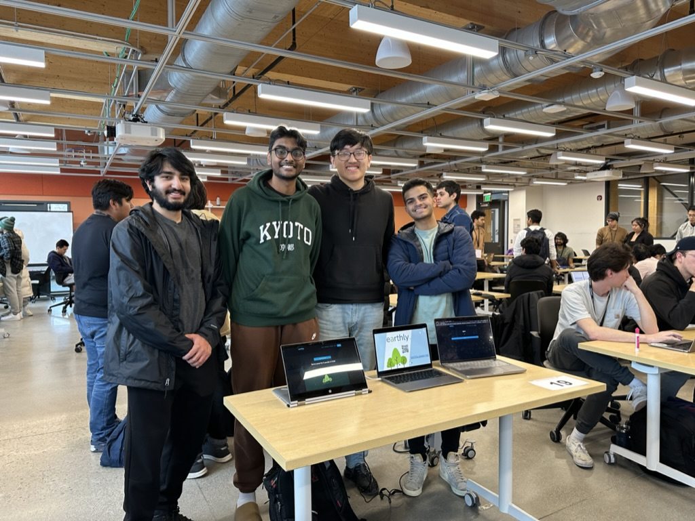
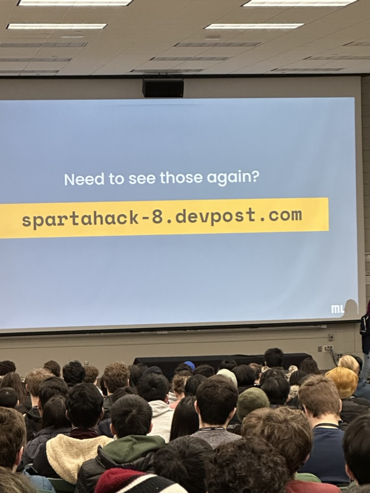
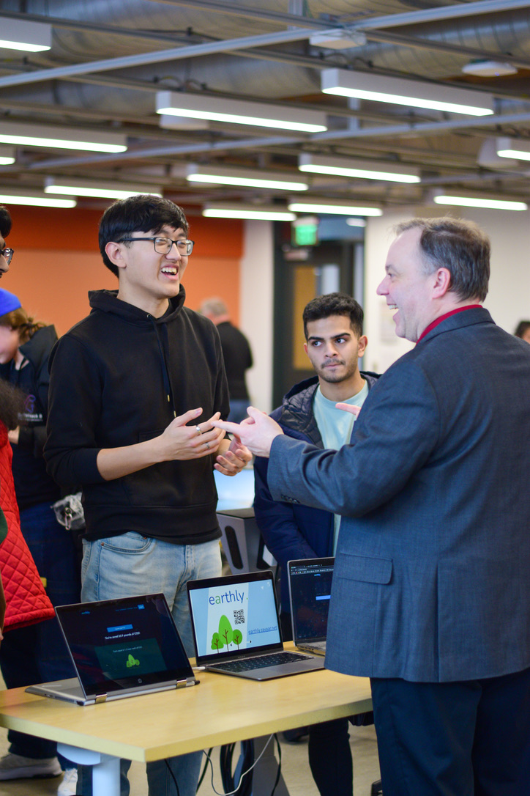
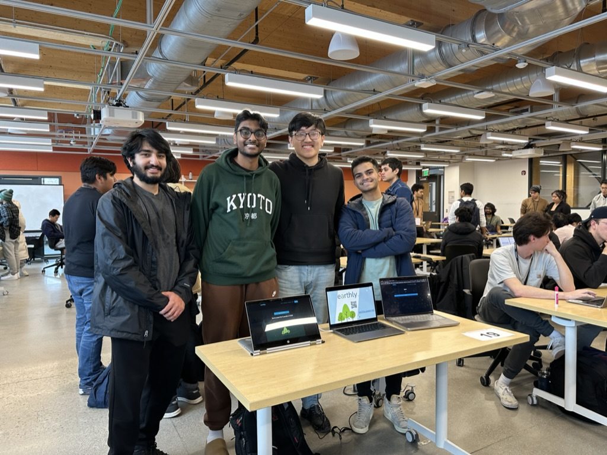
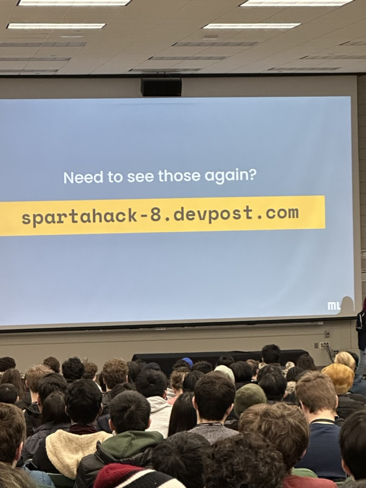
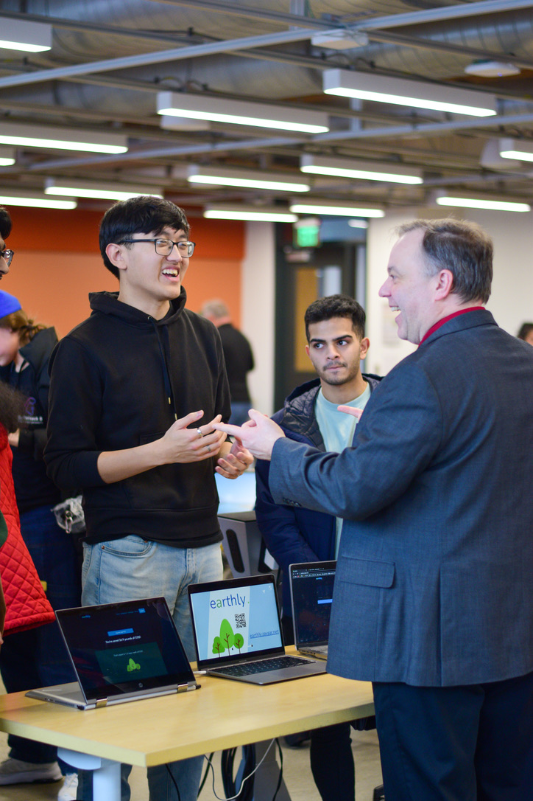

SpartaHack 8 hosted by Michigan State University, is a 24-hour in-person hackathon competition. In this competition, our team created Earthly, a full-stack web application that tracks your carbon emission savings. Every time you walk, bike, or use public transit, you can use Earthly to measure against everyday units, compare with your friends, or complete challenges. In total, there were over 91 projects by 500 participants across 24 different schools. Our team was the recipient of the Best Hack for Environmental Sustainability award.
 





I worked at a start-up called Zeet for the Summer of 2022. Zeet is a seed-stage start-up (5 engineers) backed by Sequoia Capital and leaders from AWS, Google, and Twitch that helps 50K developers deploy code to the cloud via their DevOps platform
I worked on the Zeet CLI, a command line interface that allows developers to deploy code to the cloud. I worked on the CLI in Go. As well as other features on their webpage in Javascript.